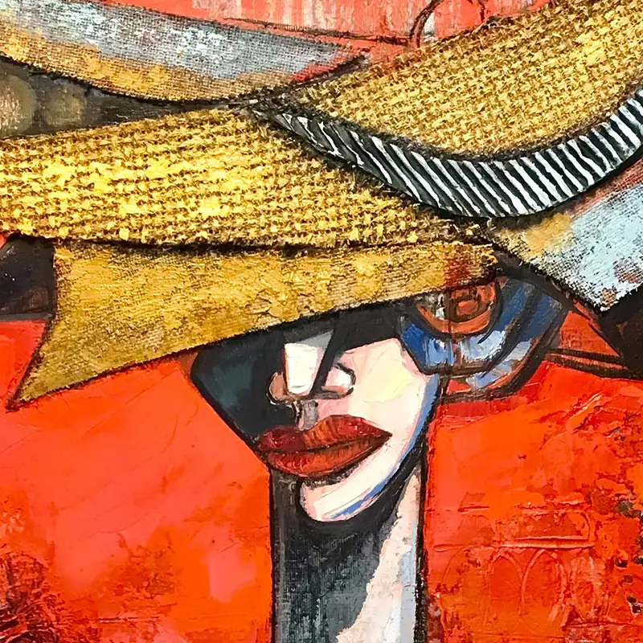

The Hopeful One
- År
- 2021
- Teknikk
- Blandingsteknikk på lerret
- Mål (høyde × bredde)
- 100 × 80 cm
The Hopeful One, 2021: et verk i blandingsteknikk på lerret av den kubansk-norske maleren og billedhuggeren Ramón Eduardo Haití Filiu.
Spør om dette verketThe Hopeful One, 2021: et verk i blandingsteknikk på lerret av den kubansk-norske maleren og billedhuggeren Ramón Eduardo Haití Filiu.
Spør om dette verketDetaljEt utsnitt på 800 piksler fra originalfotografiet, i full oppløsning.
